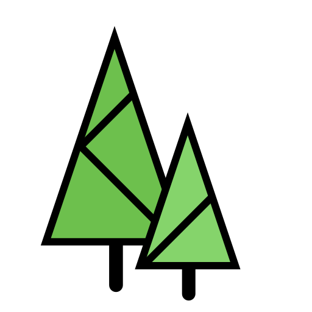

<!DOCTYPE html>
<html lang="en">
<head>
<meta charset="UTF-8">
<meta name="viewport" content="width=device-width, initial-scale=1.0">
<title>Forest on a parcel – Poland | Karol Pietruszka</title>
<meta name="description" content="Pick any parcel, State Forests subcompartment or your own shape in Poland and get forest area, tree count, heights and a timber volume estimate computed in the browser from the national GUGiK elevation models.">
<link rel="stylesheet" href="vendor/leaflet/leaflet.css">
<link href="https://fonts.googleapis.com/css2?family=Montserrat:wght@500;700&family=Raleway:wght@400;600&display=swap" rel="stylesheet">
<link rel="stylesheet" href="css/style.css?v=1">
<link rel="icon" type="image/x-icon" href="favicon.ico">
</head>
<body>
<div id="app">
  <aside id="panel">
    <header>
      
      <h1 data-i18n>Forest on a parcel</h1>
      <div class="langs">
        <button type="button" class="lang-btn" data-lang="en" aria-label="English"></button>
        <button type="button" class="lang-btn" data-lang="pl" aria-label="Polski"></button>
        <button type="button" class="lang-btn" data-lang="de" aria-label="Deutsch"></button>
      </div>
      <button id="toggle" type="button" data-i18n-aria aria-label="Hide or show the panel">▾</button>
    </header>
    <p class="lead" data-i18n>How much forest, how many trees and how much timber on any parcel in Poland, computed from airborne laser scanning.</p>
    <p class="sub" data-i18n>Type a parcel ID, or zoom in and click a parcel, a State Forests subcompartment or compartment, or draw your own shape. The canopy height is computed in your browser from the national surface and terrain models (GUGiK NMPT 0.5 m − NMT 1 m).</p>

    <form id="search">
      <input type="text" id="q" data-i18n-ph placeholder="Parcel ID, e.g. 140905_5.0031.129/6" data-i18n-aria aria-label="Parcel ID, e.g. 140905_5.0031.129/6">
      <button class="primary" type="submit" data-i18n>Find</button>
    </form>
    <div class="pick-label" data-i18n>What do you want to select on the map?</div>
    <div class="tools">
      <button type="button" id="mPick" class="on" data-i18n>Cadastral parcel</button>
      <button type="button" id="mWyd" data-i18n>Subcompartment (BDL)</button>
      <button type="button" id="mOdd" data-i18n>Compartment (BDL)</button>
      <button type="button" id="mDraw" data-i18n>Draw your own shape</button>
      <button type="button" id="mFile" data-i18n>Upload KML / GPX / GeoJSON</button>
      <button type="button" id="mHelp" data-i18n>How it works</button>
    </div>
    <input type="file" id="file" accept=".kml,.gpx,.geojson,.json" hidden>
    <div class="hint" id="hint"></div>
    <div id="status"></div>
    <div id="result"></div>
    <footer><span data-i18n>Made by</span> <a href="https://karolpiet.github.io/Portfolio/">Karol Pietruszka</a> · <a href="https://github.com/karolpiet/Forest_volume">GitHub</a></footer>
  </aside>
  <div id="map"></div>
</div>

<script src="vendor/leaflet/leaflet.js"></script>
<script src="vendor/proj4.js"></script>
<script src="vendor/geotiff.js"></script>
<script src="js/i18n.js?v=1"></script>
<script src="js/core.js?v=1"></script>
<script src="js/pl-core.js?v=1"></script>
<script>
// address of the Cloudflare Worker that passes the GUGiK elevation models to the browser
window.ALS.PROXY = 'https://geoportal-proxy.karolpietruszka88-324.workers.dev/';
</script>
<script src="js/app.js?v=1"></script>
</body>
</html>
